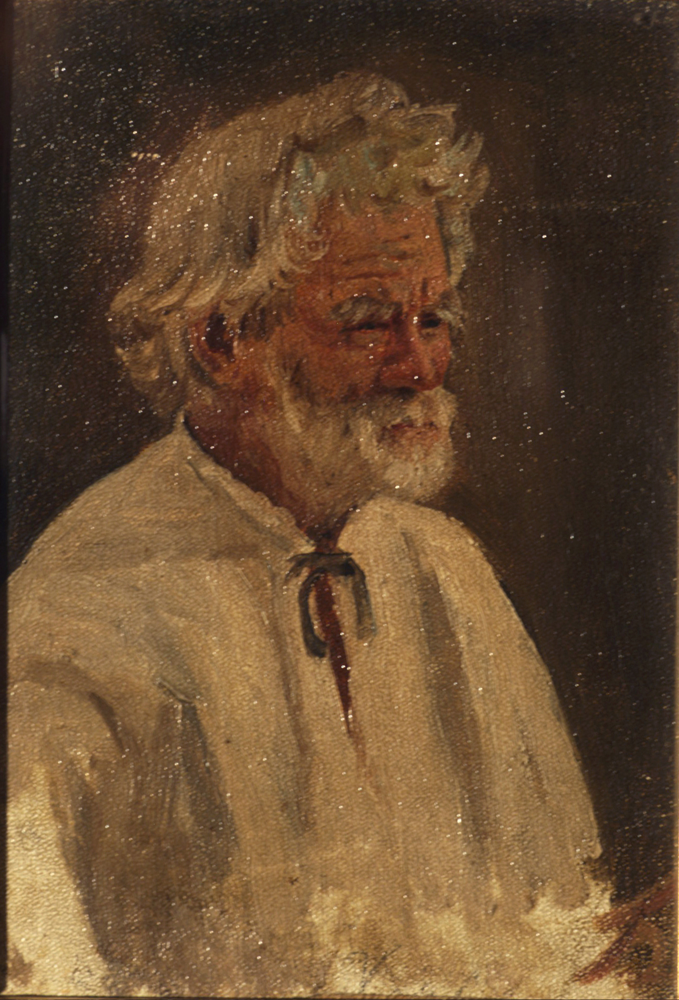
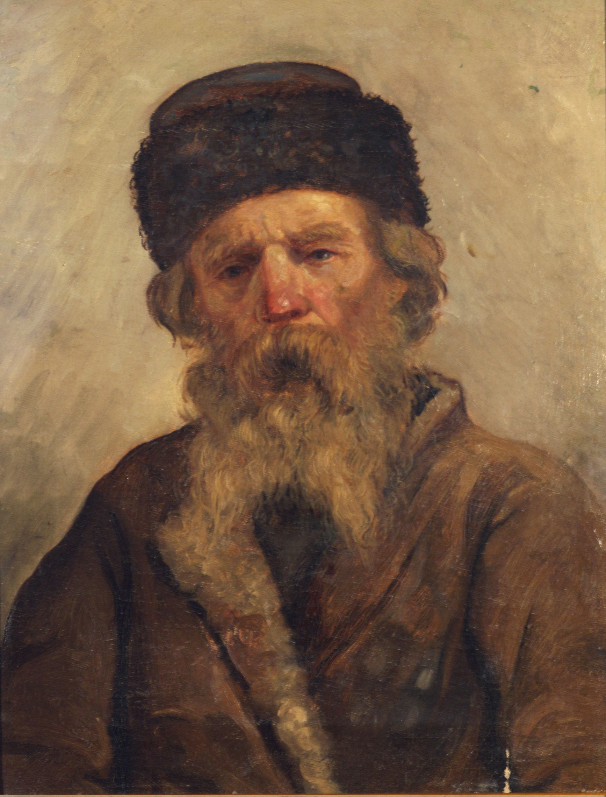
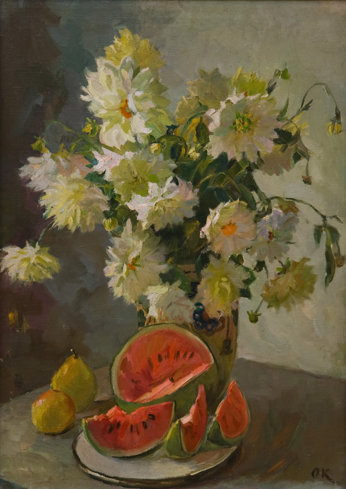
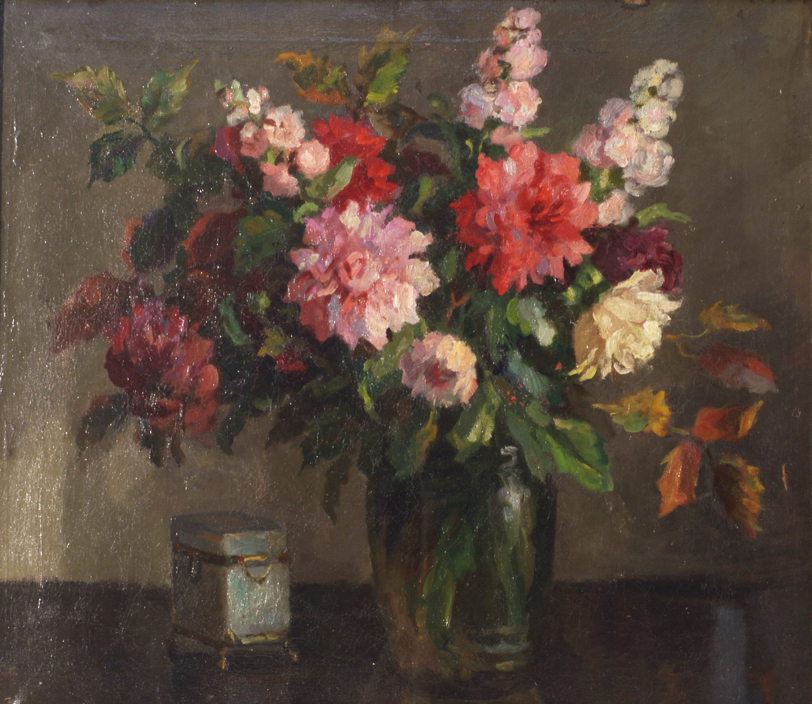
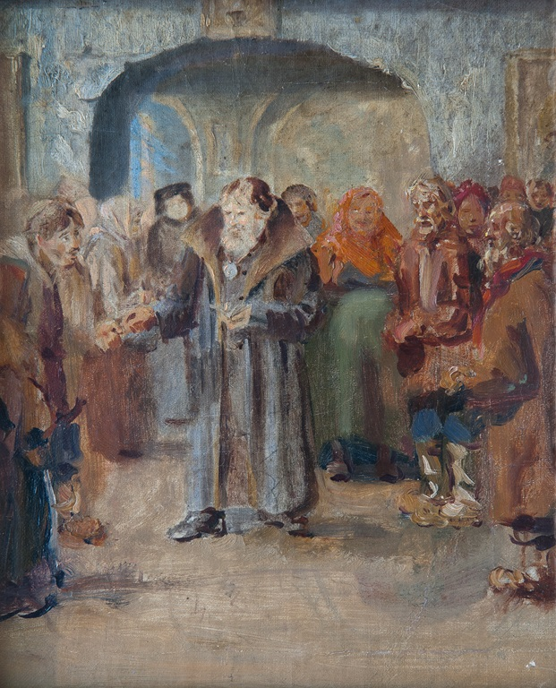
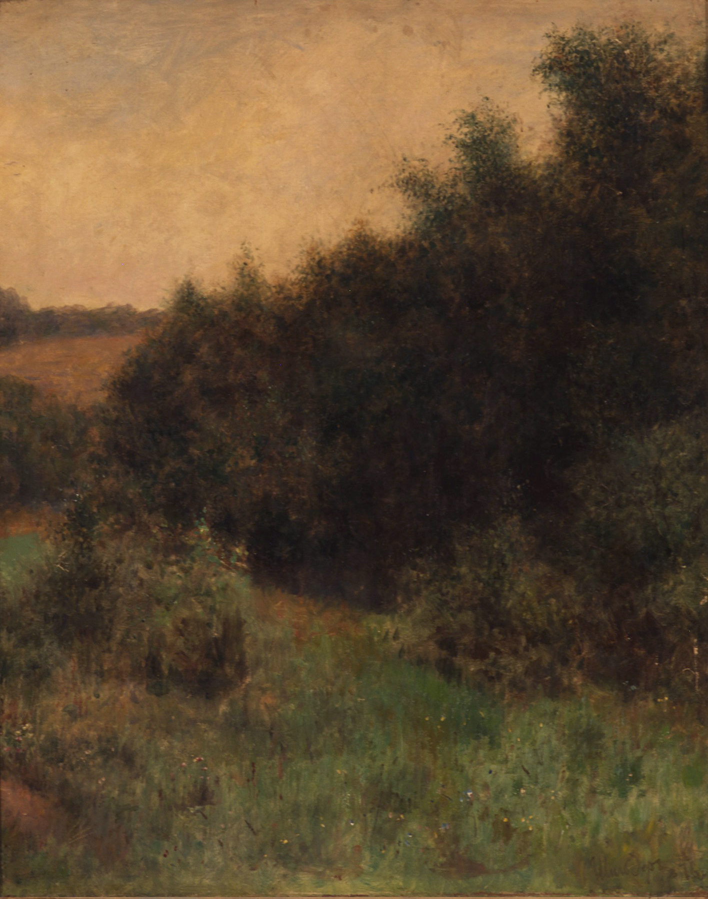

Прослушай музыкальный трек. Выбери из предложенных картин ту, которая, на твой взгляд, соответствует данному музыкальному произведению.
Коровин С.А. Этюд головы
Максимов В.М. Голова старика
Кужеленко О.Д. Белые георгины
Крамской И.Н. Букет цветов
 Перов В.Д. Сцена на паперти
 Шильдер Н.Г. Заросли кустарника. Лето